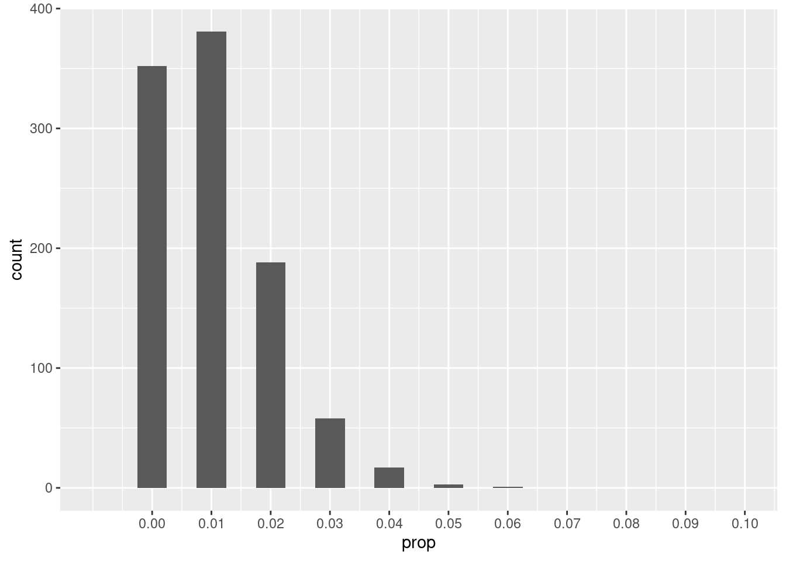

In this chapter, we’ll revisit the idea of a sampling distribution model. We’ve already seen how useful it can be to simulate the process of simulating samples from a population and looking at the distribution of values that can occur by chance (i.e., sampling variability). We’ve also had some experience working with normal models. Under certain assumptions, we can use normal models to approximate our simulated sampling distributions.
14.1.1 Install new packages
There are no new packages used in this chapter.
14.1.2 Download the Quarto file
Look at either the top (Posit Cloud) or the upper right corner of the RStudio screen to make sure you are in your intro_stats project.
Then click on the following link to download this chapter as a Quarto file (.qmd).
Once the file is downloaded, move it to your project folder in RStudio and open it there.
14.1.3 Restart R and run all chunks
In RStudio, select “Restart R and Run All Chunks” from the “Run” menu.
14.2 Load packages
We load the standard tidyvese package. The mosaic package will provide coin flips.
library(tidyverse)
── Attaching core tidyverse packages ──────────────────────── tidyverse 2.0.0 ──
✔ dplyr 1.1.4 ✔ readr 2.1.5
✔ forcats 1.0.0 ✔ stringr 1.5.1
✔ ggplot2 3.5.1 ✔ tibble 3.2.1
✔ lubridate 1.9.4 ✔ tidyr 1.3.1
✔ purrr 1.0.2
── Conflicts ────────────────────────────────────────── tidyverse_conflicts() ──
✖ dplyr::filter() masks stats::filter()
✖ dplyr::lag() masks stats::lag()
ℹ Use the conflicted package (<http://conflicted.r-lib.org/>) to force all conflicts to become errors
library(mosaic)
Registered S3 method overwritten by 'mosaic':
method from
fortify.SpatialPolygonsDataFrame ggplot2
The 'mosaic' package masks several functions from core packages in order to add
additional features. The original behavior of these functions should not be affected by this.
Attaching package: 'mosaic'
The following object is masked from 'package:Matrix':
mean
The following objects are masked from 'package:dplyr':
count, do, tally
The following object is masked from 'package:purrr':
cross
The following object is masked from 'package:ggplot2':
stat
The following objects are masked from 'package:stats':
binom.test, cor, cor.test, cov, fivenum, IQR, median, prop.test,
quantile, sd, t.test, var
The following objects are masked from 'package:base':
max, mean, min, prod, range, sample, sum
14.3 Sampling variability and sample size
We know that when we sample from a population, our sample is “wrong”: even when the sample is representative of the population, we don’t actually expect our sample statistic to agree exactly with the population parameter of interest. Our prior simulations have demonstrated this. They are centered on the “true” value (for example, in a hypothesis test, the “true” value is the assumed null value), but there is some spread due to sampling variability.
Let’s explore this idea a little further, this time considering how sample size plays a role in sampling variability.
Suppose that a certain candidate in an election actually has 64% of the support of registered voters. We conduct a poll of 10 random people, gathering a representative (though not very large) sample of voters.
We can simulate this task in R by using the rflip command from the mosaic package. Remember that the default for a coin flip is a 50% probability of heads, so we have to change that if we want to model a candidate with 64% support.
set.seed(13579)rflip(10, prob =0.64)
Flipping 10 coins [ Prob(Heads) = 0.64 ] ...
H T H T H H H T T H
Number of Heads: 6 [Proportion Heads: 0.6]
You can think of the above command as taking one random sample of size 10 and getting a certain number of “successes”, where a “success” is a person who votes for our candidate—here encoded as “heads”. In other words, of the 10 people in this particular sample, we surveyed 6 people who said they were voting for our candidate and 4 people who were not.
Using the do command, we can simulate many samples, all of size 10. Let’s take 1000 samples and store them in a variable called sims_1000_10.
Note that with 10 people, it is impossible to get a 64% success rate in any given sample. (That would be 6.4 people!) Nevertheless, we can see that many of the samples gave us around 5–8 successes, as we’d expect when the true population rate is 64%. Also, the mean number of successes across all simulations is 6.414, which is very close to 6.4.
Instead of focusing on the total number of successes, let’s use the proportion of successes in each sample. We can graph our simulated proportions, just as we’ve done in previous chapters. (The fancy stuff in scale_x_continuous is just making sure that the x-axis goes from 0 to 1 and that the tick marks appear as multiples of 0.1.)
Warning: Removed 2 rows containing missing values or values outside the scale range
(`geom_bar()`).
Because each sample has size 10, the proportion of successes can only be multiples of 0.1. Although the distribution is somewhat normally shaped, it is discrete (no values in between the bars) and there is an appreciable left skew.
What happens if we increase the sample size to 20? (The binwidth has to change to see the discrete bars.)
Warning: Removed 2 rows containing missing values or values outside the scale range
(`geom_bar()`).
Exercise 1
Explain how the distribution of simulations has changed going from a sample size of 10 to a sample size of 20.
Please write up your answer here.
Exercise 2(a)
Run a set of simulations yourself, this time with samples of size 50. Use the same number of simulations (1000) and the same ggplot code from above (especially the scale_x_continuous option) so that the x-axis is scaled identically to the previous cases, but change the binwidth to 0.01.
set.seed(13579)# Add code here to simulate 1000 random samples of size 50.
# Add code here to and plot the simulated values.
Exercise 2(b)
Explain how the distribution of simulations has changed going from a sample size of 10 to 20 to 50.
Please write up your answer here.
14.4 The sampling distribution model and the standard error
In the last chapter on normal models, we mentioned briefly the Central Limit Theorem and the fact that under certain assumptions, our simulations would look normally distributed. More concretely, the Central Limit Theorem tells us that as our sample size increases, the distribution of sample proportions looks more and more like a normal model. This model is called the sampling distribution model because it describes how many different samples from a population should be distributed.
Which normal model do we use? In other words, what is the mean and standard deviation of a normal model that describes a simulation of repeated samples?
The simulations above are all centered at the same place, 0.64. This is no surprise. If the true population proportion is 0.64, then we expect most of our samples to be around 64% (even if, as above, it is actually impossible to get exactly 64% in any given sample).
But what about the standard deviation? It seems to be changing with each sample size.
Exercise 3
Looking at your simulations above, how does the standard deviation appear to change as the sample size increases? Intuitively, why do you think this happens? (Hint: think about the relationship between larger sample sizes and accuracy.)
Please write up your answer here.
The standard deviation of a sampling distribution is usually called the standard error. The use of the word “error” in statistics does not mean that anyone made a mistake. A better word for error would be “uncertainty” or even just “variability”.
There is some complicated mathematics involved in figuring out the standard error, so we’ll just tell you what it is. If \(p\) is the true population proportion, then the standard error is
\[
\sqrt{\frac{p(1 - p)}{n}}.
\]
Therefore, if the sample size is large enough, the sampling distribution model is nearly normal, and the correct normal model is
\[
N\left(p, \sqrt{\frac{p(1 - p)}{n}}\right).
\]
In our election example, we can calculate the standard error for a sample of size 10:
We can do this easily using inline R code. (Remember that R is nothing more than a glorified calculator.) If a candidate has 64% of the vote and we take a sample of size 10, the standard error is 0.1517893. In other words, the sampling distribution model is
\[
N(0.64, 0.152).
\]
For a sample of size 20, the standard error is 0.1073313 and the sampling distribution model is
\[
N(0.64, 0.107).
\]
Exercise 4
Calculate the standard error for the example above, but this time using a sample size of 50. Give your answer as a contextually meaningful full sentence using inline R code.
Please write up your answer here.
14.5 Conditions
Like anything in statistics, there are assumptions that have to be met before applying any technique. We must check that certain conditions are true before we can reasonably make the necessary assumptions required by our model.
When we want to use a normal model, we have to make sure the sampling distribution model is truly normal (or nearly normal).
First, we need our samples to be random. Clearly, when samples are not random, there is a danger of bias, and then all bets are off. Of course, in real life hardly any sample will be truly random, so being representative is the most we can usually hope for.
Second, our sample size must be less than 10% of the population size. The reasons for this are somewhat technical, and 10% is a rough guideline. The idea is that if we are sampling, we need our sample not to be a significant chunk of the population.
These two conditions are always important when sampling. Together, they help ensure that the mathematical assumption of independence is met. In other words, when these two conditions are met, there is a better chance that the data from one member of our sample will not influence nor be influenced by the data from another member.
For applying normal models, there is one more condition. It is called the “success/failure” condition. We need for the total number of successes to be at least 10 and, similarly, for the total number of failures to be at least 10.
Go back and consider our first simulated sample. The true rate of success in the population was presumed to be 64%. Given that we were sampling only 10 individuals, this implies that, on average, we would expect 6.4 people out of 10 to vote for the candidate. And likewise, that means that we would expect 3.6 people to vote against the candidate. (Clearly, it is impossible in any given sample to get 6.4 votes for, or 3.6 votes against. But on average, this is what we expect.) In fact, since the sample size was 10, there was no way that we could meet the success/failure condition. When we plotted the histogram of simulated proportions, we saw the problem: with such small numbers, the histogram was skewed, and not normal.
We check the success/failure condition by calculating \(np\) and \(n(1 - p)\): \(n\) is the sample size and \(p\) is the proportion of successes. Therefore, \(np\) is the total number of successes. Since \(1 - p\) is the proportion of failures, \(n(1 - p)\) is the total number of failures. Each of the numbers \(np\) and \(n(1 - p)\) needs to be bigger than 10.
In our example, \(n = 10\) (the sample size), and \(p = 0.64\) (the probability of success). So
\[
np = 10(0.64) = 6.4
\]
and
\[
n(1 - p) = 10(1 - 0.64) = 10(0.36) = 3.6.
\]
Neither of these numbers is bigger than 10.
Notice that when \(n\) is large, the quantities \(np\) and \(n(1 - p)\) will also tend to be large. This is the content of the Central Limit Theorem: when sample sizes grow, the sampling distribution model becomes more and more normal.
There is something else going on too. Suppose that \(n = 100\) but \(p = 0.01\). The sample seems quite large, but let’s look at the sampling distribution through a simulation.
Warning: Removed 2 rows containing missing values or values outside the scale range
(`geom_bar()`).

(Note that the x-axis scale is much smaller than it was before.)
Exercise 5
What’s the problem here? Despite having a fairly large sample size, why is this distribution so skewed?
Please write up your answer here.
In this scenario, the success/failure condition fails because
\[
np = (100)(0.01) = 1 \ngeq 10.
\]
In other words, in a typical sample, we expect 1 success and 99 failures. This does not satisfy the success/failure condition.
Exercise 6
Going back to the election example (in which the candidate has 64% of the vote), check that a sample size of 50 does satisfy the success/failure condition.
Please write up your answer here.
14.6 Using the model to make predictions
Once we know that a normal model is appropriate, we can employ all the tools we’ve previously developed to work with normal models, notably pdist and qdist.
For example, we know that samples can be “wrong” due to sampling variability. Even though we know the candidate has 64% support, most surveys are not going to give us back that exact number.
Could a survey of 50 random voters accidentally predict defeat for the candidate even though the candidate will actually win with 64% support?
ggplot(survey_sim, aes(x = prop)) +geom_histogram(binwidth =0.01) +geom_vline(xintercept =0.5, color ="blue")
It looks like there are at least a few simulated samples that could come in less than 50% by chance.
Let’s check the conditions to see if we can use a normal model:
Random
We are told that our 50 voters are a random sample.
10%
It is safe to assume there are more than 500 voters for this election.
Success/failure
The number of expected successes is 32 and the expected number of failures is 18. These are both greater than 10.
Since the conditions are satisfied, our sampling distribution model can be approximated with a normal model. The standard error is 0.0678823. Therefore, our normal model is
\[
N(0.64, 0.068).
\]
Back to our original question. How likely is it that a random survey of 50 voters predicts defeat for the candidate? Well, any survey that comes in less than 50% will make it look like the candidate is going to lose. So we simply need to figure out how much of the sampling distribution lies below 50%. This is made simple with the pdist command. Note that we’ll get a more accurate answer if we include the formula for the standard error, rather than rounding it off as 0.068.
From the picture, we can see that there is only about a 2% chance that one of our surveys of 50 voters could predict defeat. Using inline code, we calculate it as 1.9585083%. The vast majority of the time, then, when we go out and take such a survey, the results will show the candidate in the lead. It will likely not say exactly 64%; there is still a relatively wide range of values that seem to be possible outcomes of such surveys. Nevertheless, this range of values is mostly above 50%. Nevertheless, there is a small chance that the survey will give us the “wrong” answer and predict defeat for the candidate.1
Exercise 7(a)
Suppose we are testing a new drug that is intended to reduce cholesterol levels in patients with high cholesterol. Also suppose that the drug works for 83% of such patients. When testing our drug, we use a suitably random sample of 143 individuals with high cholesterol.
First, simulate the sampling distribution using 1000 samples, each of size 143. Plot the resulting sampling distribution.
set.seed(13579)# Add code here to simulate 1000 samples of size 143.
# Add code here to plot the resulting distribution.
Exercise 7(b)
Next, check the conditions that would allow you to use a normal model as a sampling distribution model. We’ve given you an outline below:
Random
[Check condition here.]
10%
[Check condition here.]
Success/failure
[Check condition here.]
Exercise 7(c)
If the conditions are met, we can use a normal model as the sampling distribution model. What are the mean and standard error of this model? (You should use inline R code to calculate and report the standard error.)
Please write up your answer here.
Exercise 7(d)
Market analysis shows that unless the drug is effective in more than 85% of patients, doctors won’t prescribe it. Secretly, we know that the true rate of effectiveness is 83%, but the manufacturer doesn’t know that yet. They only have access to their drug trial data in which they had 143 patients with high cholesterol.
Using the normal model you just developed, determine how likely the drug trial data will be to show the drug as “effective” according to the 85% standard. In other words, how often will our sample give us a result that is 85% or higher (even though secretly we know the true effectiveness is only 83%)? Report your answer in a contextually-meaningful full sentence using inline R code. (Hint: you’ll need to use the pdist command.)
Please write up your answer here.
14.7 Conclusion
It is very easy to work with normal models. Therefore, when we want to study sampling variability, it is useful to have a normal model as a sampling distribution model. The standard error is a measure of how variable random samples can be. Such variability naturally decreases as our sample size grows. (This makes sense: larger samples give us more precise estimates of the true population, so they should be “closer” to the true population value.) Once conditions are checked, we can use normal models to make predictions about what we are likely to see when we sample from the population.
14.7.1 Preparing and submitting your assignment
From the “Run” menu, select “Restart R and Run All Chunks”.
Deal with any code errors that crop up. Repeat steps 1–2 until there are no more code errors.
Spell check your document by clicking the icon with “ABC” and a check mark.
Hit the “Render” button one last time to generate the final draft of the HTML file. (If there are errors here, you may need to go back and fix broken inline code or other markdown issues.)
Proofread the HTML file carefully. If there are errors, go back and fix them, then repeat steps 1–5 again.
If you have completed this chapter as part of a statistics course, follow the directions you receive from your professor to submit your assignment.
Most polls in the 2016 presidential election predicted a win for Hillary Clinton, so they also gave the wrong answer. It’s possible that some of them were accidentally wrong due to sampling variability, but a much more likely explanation for their overall failure was bias.↩︎